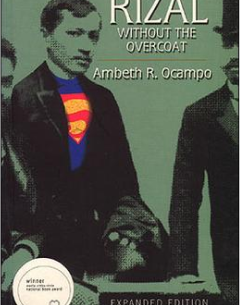
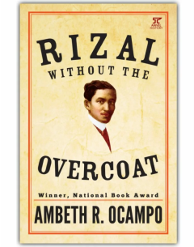

Rizal Without the Overcoat
This book takes a fresh look at Rizal's life and works, offering a more nuanced understanding of the national hero.
by Ambeth R. Ocampo


This book takes a fresh look at Rizal's life and works, offering a more nuanced understanding of the national hero.
by Ambeth R. Ocampo
This comprehensive biography provides a detailed account of Rizal's life, from his childhood to his execution.
by Leon Guerrero
A classic biography of the PHilippine's National Hero, this book revises the previous edition written for the Jose Rizal Centennial with fresh insights, new data, and new appedices. One of the best-selling books on Rizal, this volume contains new inforamation about the conditions in Rizal's times, the attempt on his life in Dapitan, his prophetic views about the Philippines, and other data. In particular, it correts the impression that Rizal had been a "colonial-made hero," and affirms that he was a hero for all seasons and for all people -- Filipinos, Spaniards, and Americans, Germans, Austrians, Malays, Indonesians, etc.
by Gregorio F. Zaide & Sonia M. Zaide